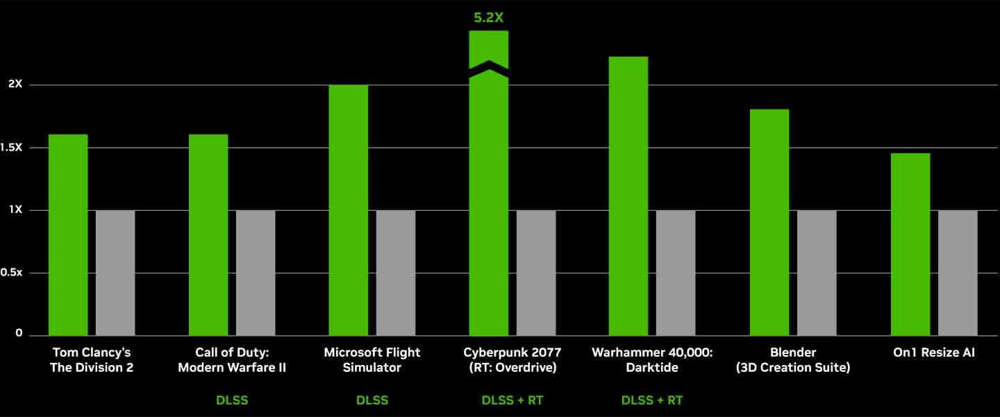
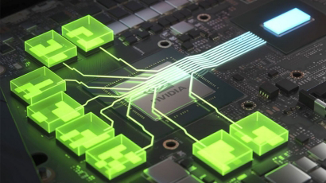

GeForce RTX 4090
La arquitectura Ada Lovelace de la GeForce RTX 4090, bajo nuestra lupa
NVIDIA no se ha andado con delicadezas a la hora de comunicar qué representa para esta compañía la llegada de la arquitectura Ada Lovelace: un salto gigantesco en términos de rendimiento y eficiencia.
En cualquier caso, más allá de la apuesta por la tecnología de integración de 4 nm de TSMC en detrimento de la litografía de 8 nm de Samsung utilizada en la fabricación de los procesadores gráficos GeForce RTX 30, las nuevas GPU de NVIDIA nos entregan una nueva generación de núcleos RT y núcleos Tensor, así como más núcleos CUDA que nunca.
También llegan de la mano de frecuencias de reloj más altas e implementan tecnologías de procesado de la imagen más sofisticadas. Así se las gastan las brutales (y caras) GeForce RTX 40
ArribaRendimiento
Rendimiento RelativoResolución de 3840x2160, configuración de juego más alta, modo de rendimiento de súper resolución DLSS, encuadre DLSS en la serie RTX 40, i9-12900K, 32 GB de RAM, Win 11 x64. Todos los datos de DLSS Frame Generation y Cyberpunk 2077 con el nuevo Ray Tracing: Overdrive Mode basado en versiones anteriores.
Arriba Que es Ray Tracing?
Ray Tracing es una tecnología que se encarga de mejorar las iluminaciones, sombras y reflejos de los videojuegos. Las palabras Ray Tracing significan en español trazado de rayos, haciendo referencia a un mucho mejor cálculo de los reflejos y sombras creados por las iluminaciones del entorno. Con este algoritmo, las escenas en los videojuegos se acercan más a la realidad pero también tienen sus desventajas, y es que el rendimiento en FPS globales se ve bastante penalizado.
NVIDIA comenzó a desarrollar un algoritmo para implementar Ray Tracing en sus tarjetas gráficas hace muchos años, pero no fue hasta finales de 2018 cuando salieron las primeras tarjetas gráficas al mercado con esta tecnología. De esta manera, las gráficas creadas bajo la arquitectura Turing soportan Ray Tracing. Es fácil reconocerlas directamente ya que NVIDIA cambió la nomenclatura de sus gráficas con la salida de las Turing, de manera que ahora comienzan por las siglas RTX en lugar de GTX. Todas las NVIDIA RTX soportan Ray Tracing.
Esta tecnología se apoya en el cálculo generado por los Tensor Cores, unas nuevas unidades de procesamiento en la GPU que están dedicadas a los cálculos de estas iluminaciones que generan sombras y reflejos mucho más acertados en antes.
Claro está, los juegos deben soportar también el algoritmo y deben estar diseñados para poder ofrecer esta opción, por lo que una minoría de juegos en la actualidad soportan Ray Tracing. Se ve una clara tendencia hacia una implementación masiva en un futuro no muy lejano, pero de momento nos conformamos con los conocidos Battlefield V, Minecraft, Metro Exodus, Watch Dogs y Call of Duty: Modern Warfare (2019), entre otros, aunque falta por ver el famoso Crysis Remastered con esta tecnología, que seguramente desafíe a toda tarjeta gráfica habida y por haber durante años.
Arriba
Nvidia dlss 3
Dlss es un avance revolucionario en gráficos impulsados por IA que aumenta enormemente el rendimiento. Potenciado con los nuevos Núcleos Tensor de cuarta generación y el Acelerador de Flujo Óptico en las GPUs GeForce RTX Serie 40, DLSS 3 usa IA para crear cuadros adicionales de alta calidad.
ArribaEspecificaciones
La NVIDIA GeForce RTX 4090 es la GPU definitiva de la serie GeForce. Aquí tienes las especificaciones clave:- Unidades de sombreado: 16,384
- Unidades de mapeo de texturas (TMUs): 512
- ROPs (Raster Operation Pipelines): 176
- Núcleos Tensor: 512 (ayudan a mejorar la velocidad de aplicaciones de aprendizaje automático)
- Núcleos de aceleración de ray tracing: 128
- Memoria: 24 GB de GDDR6X
- Interfaz de memoria: 384 bits
